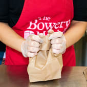

These are more volunteering opportunities with links to the organizations' sites and detailed descriptions of each one.
Little Essentials

In June 2010, our founder, Sandie Trombert, saw a post on her neighborhood parenting listserv in Brooklyn that changed her life - and the lives of thousands of New York children living in poverty. A volunteer at a city agency posted to the listserv that there was a pregnant mother living in a homeless shelter who was desperate for baby clothes. Directly alongside her plea were posts from parents looking to give away surplus clothing, strollers, carseats and other items that their families no longer needed. The contrast was striking. Sandie immediately contacted the parents with items to give away. She drove around her neighborhood to collect the donations, then delivered them to the agency - all with her six-month-old baby in tow. In the coming months, she became more involved in making connections between parents donating items and the agencies who help low-income families acquire much-needed essentials. In May of 2011 Little Essentials was born. In the years since then, the organization has grown from something Sandie ran out of her living room to an established entity that, together with our partners and with the support of our sponsors, has served over 34,000 children living in poverty.
New York Cares

New York Cares is New York City's leading volunteer organization. Founded in 1987, New York Cares enables more than 54,000 volunteers each year to serve on flexibly-scheduled, team-based projects serving schools, social service agencies, and other deserving organizations. New York Cares volunteers tutor children, feed the hungry, assist people living with HIV/AIDS, revitalize gardens, take homeless children on recreational outings, visit the elderly, and do so much more. In addition to year-round volunteer programs, New York Cares organizes four large scale service events every year: New York Cares Day Fall, New York Cares Day Spring, Winter Wishes, and Coat Drive.
Food Bank For New York City

Founded in 1983, Food Bank For New York City operates the country's largest food bank, providing community food programs throughout the five boroughs of New York City with food, related products and support services. Today we distribute more than 51 million pounds of food every year to over 1,200 community-based programs that serve free meals to the City's hungry. These programs include soup kitchens, food pantries, shelters, senior centers, low-income day care centers and other nonprofit programs that reach out to people in need of food. Operating out of our Bronx-based warehouse Food Bank For New York City collects, inspects, and distributes millions of pounds of food. Food Bank For New York City also provides support services to the City's emergency food providers by hosting nutrition and food safety workshops, networking sessions and other education initiatives. We use our central role in the City's anti-hunger effort to provide legislators, advocates and the media with information about hunger in the City so that they may formulate effective policy and heighten public awareness of this important issue. Food Bank For New York City is a certified member of the Second Harvest National Food Bank Network.
Hunger Free America

HUNGER FREE AMERICA (formerly known as the New York City Coalition Against Hunger) is a national nonprofit group building a nonpartisan, grass-roots membership movement to enact the policies and programs needed to end domestic hunger and ensure that all Americans have sufficient access to nutritious food. Our long-term goal is not just to ameliorate the problem, but also to build the people’s movement necessary to enact the economic and public policies needed to end hunger entirely. Given that hunger drains our economy and tears at our moral and civic fabric, we know that eliminating it will boost the nation both economically and spiritually. Towards that end, we’ve adopted the motto: "Ending hunger lifts us all."
The Bowery Mission
Without the help of thousands of volunteers each year, The Bowery Mission simply could not meet the needs of people experiencing homelessness and hunger in the New York metro area. People like YOU truly make our work possible! Volunteers play an especially vital role in our Compassionate Care program, which daily provides nutritious meals and meets other critical needs. From packing to-go meals, unloading and sorting goods, wiping down tables and so much more - our faithful volunteers step up to make sure our guests can receive nourishing meals safely. Just from last year: nearly 4,000 volunteers served with us to care for neighbors in need, volunteers helped us prepare and serve more than 255,000 meals, and volunteers donated more than 22,000 hours of their time. That much time is equivalent to 2.5 years!